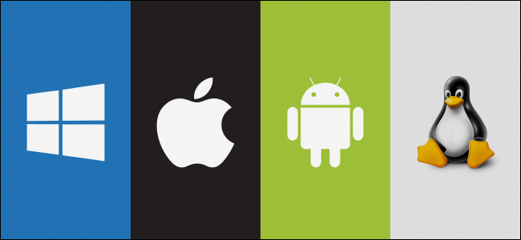

An operating system (OS) is a software that acts as an interface between hardware and the user. It controls and manages hardware resources such as the CPU, memory, storage devices, and input/output devices. OS provides a user interface to interact with the computer and manages tasks such as file management, process scheduling, and security. Examples of operating systems include Microsoft Windows, macOS, and Linux. The OS is the backbone of a computer, enabling applications to run and providing an environment for users to interact with the system effectively. It ensures the smooth execution of programs by managing resources efficiently and securely.
The operating system performs several crucial functions that are necessary for the efficient operation of a computer system. Some of these functions include:
Operating systems can be categorized in several ways. Based on processing, we have:
Single-tasking OS: Can handle one task at a time (e.g., early MS-DOS).
Multitasking OS: Can handle multiple tasks simultaneously (e.g., modern Windows, Linux).
Based on user interface, the OS can be categorized as:
Command-line Interface (CLI): The user interacts with the OS by typing commands (e.g., Linux terminal).
Graphical User Interface (GUI): The user interacts with visual icons and menus (e.g., Windows, macOS).